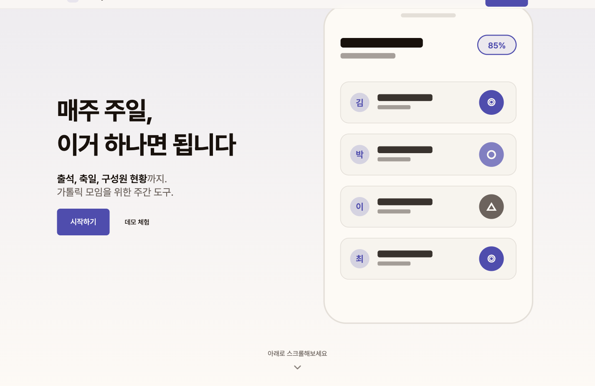

반복 업무를 시스템으로
엑셀로 옮겨 적던 명단, 재고, 주문과 보고서. 필요한 정보를 한곳에서 관리하고, 반복 작업을 줄이는 웹사이트와 관리 화면을 만듭니다.
명단 / 재고 / 주문 / 보고서SOFTWARE FOR YOUR EVERYDAY WORK
웹사이트와 업무 관리 시스템, 서비스 연동과 자동화.
위클리랩은 실제 일하는 흐름을 살펴보고,
새로 만들거나 이미 쓰는 소프트웨어를 개선합니다.
정리된 기획서가 없어도, 필요한 일부터 이야기해 주세요.
01 / WHAT WE DO
새로운 서비스부터 기존 시스템의 불편까지.
엑셀로 옮겨 적던 명단, 재고, 주문과 보고서. 필요한 정보를 한곳에서 관리하고, 반복 작업을 줄이는 웹사이트와 관리 화면을 만듭니다.
명단 / 재고 / 주문 / 보고서로그인과 결제, 문자와 이메일 발송, 파일 저장과 외부 데이터 연동. 따로 쓰던 기능을 업무 흐름에 맞게 연결합니다.
로그인 / 결제 / 알림 / 데이터느린 조회, 맞지 않는 데이터, 반복되는 오류의 원인을 살핍니다. 기존 기능과 사용 흐름을 고려해 개선하고 필요한 이전 작업을 진행합니다.
성능 / 데이터 정합성 / 시스템 이전02 / SELECTED WORK
실제 업무에 필요한 기능을 만들고 개선한 사례입니다.
아이들의 출석을 기록하고, 공동체의 현황을 살피는 주일학교 출석 관리 서비스입니다.

소셜 로그인, 문자와 이메일 발송, 파일 업로드를 서비스 흐름에 연결했습니다. 관리자가 회원과 거래, 일정 현황을 조회할 수 있는 통계 기능을 만들었습니다.
Google / Kakao 로그인, S3 파일 저장, 통계 API 11개 구현.
담당자가 소식과 일정, 사진과 안내 내용을 직접 관리할 수 있는 홈페이지와 관리자 화면을 구축하고 있습니다.
콘텐츠 편집과 게시, 운영 알림, 오류 수집 기능 구현.
현재 재고뿐 아니라 배송 중 수량과 도착 예정일을 반영해 발주를 판단하도록 만들었습니다. 거래명세서와 엑셀 일괄 처리 기능도 개발했습니다.
재고 동시 수정 처리, 구독과 환불, 조회 성능 개선과 부하 테스트 도구 구현.
기존 서비스의 호출 방식을 유지하면서 검색 API를 새 서버로 옮겼습니다. 검색 데이터의 불일치를 조사하고 대량 알림 처리도 개선했습니다.
검색 API 4개 이전, 데이터 검증, 수집 실패에 대비한 보호 장치 구현.
공개키 기반 인증과 국제 배송에 필요한 번역, 환율 갱신, 배송 조회 기능을 개발했습니다. 고객의 운영 환경에 맞춰 데이터베이스와 서버를 이전했습니다.
FIDO / WebAuthn 인증, 외부 API 연동, 데이터베이스 전환.
외부 데이터를 주기적으로 모아 저장하고, 이메일 알림과 엑셀 보고서로 확인할 수 있게 만들었습니다. 기존 공공 시스템의 전환 작업도 진행했습니다.
데이터 수집 배치, 보고서 다운로드, Java / Spring 기반 시스템 개선.
03 / HOW WE WORK
각 단계에서 함께 확인할 내용을 안내합니다.
만들고 싶은 서비스나 개선할 업무를 듣습니다. 기존 화면과 엑셀, 참고 자료를 함께 보며 필요한 기능과 희망 일정, 예산을 정리합니다.
필요한 화면과 기능, 사용 흐름을 문서와 시안으로 보여드립니다. 실제로 화면을 살펴보며 만들 범위를 구체화합니다.
작업 범위, 일정, 금액과 검수 기준을 문서로 합의합니다. 서버와 외부 서비스의 운영 비용도 구분해 안내하고, 정한 착수 조건에 맞춰 시작합니다.
필요한 자료와 계정 준비를 안내하고, 구현한 화면과 기능을 보여드리며 진행합니다. 추가 요청이나 변경이 생기면 일정과 비용에 미치는 영향을 먼저 협의합니다.
사용자와 관리자의 실제 이용 흐름으로 기능을 확인합니다. PC와 휴대폰에서 합의한 기준을 점검하고, 보완할 항목을 정리해 수정 후 다시 확인합니다.
운영 환경과 서비스 연결을 확인하고, 담당자에게 계정과 사용 안내를 전달합니다. 관리 방법을 교육하며, 이후 유지보수가 필요하면 범위와 비용을 별도로 협의합니다.
프로젝트에 따라 공개 시점과 검수, 교육 일정을 조율합니다. 준비할 자료와 단계별 확인사항은 진행 전에 안내드립니다.
04 / LET’S TALK
어떤 일을 해결하고 싶은지, 언제 필요한지 알려주세요.
참고할 화면이나 자료가 있다면 함께 보내주셔도 좋습니다.
이메일 버튼을 누르면 문의 항목이 담긴 메일 작성 창이 열립니다.